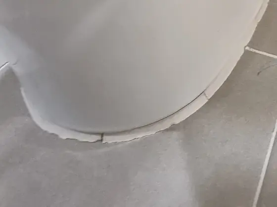
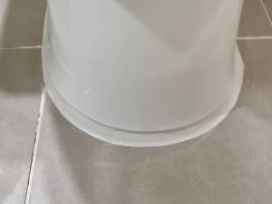

BEFOREAFTER서울 송파 변기 하부 고정 시멘트 보수
- 작업 전
- 현장을 확인해 보니 변기와 바닥이 만나는 부분을 따라 기존 시멘트가 갈라져 있었습니다. 일부는 이미 떨어져 나가 있었고 손상된 부분은 작은 충격에도 추가로 부서질 수 있는 상태였습니다.
- 작업 내용
- 변기 하부 상태 확인 → 깨진 고정 시멘트 제거 → 바닥과 변기 주변 정리 → 수평과 위치 확인 → 새 고정재 시공 및 마감
- 작업 완료
- 작업 전에는 변기 아래의 기존 시멘트가 여러 부분 깨져 고정부가 불안정한 상태였습니다. 이번 작업에서는 손상된 기존 재료를 먼저 제거하고 수평과 위치를 확인한 뒤 하부를 새롭게 고정했습니다.
- 마무리
- 다만 변기가 실제로 심하게 흔들리거나 누수까지 함께 발생한다면 하부 배관과 정심 상태까지 추가 확인이 필요할 수 있습니다.